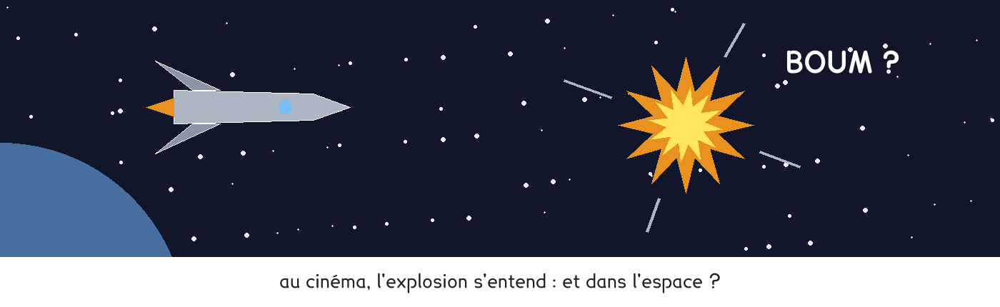
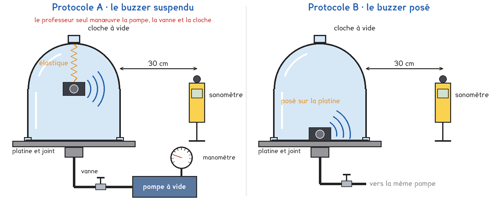
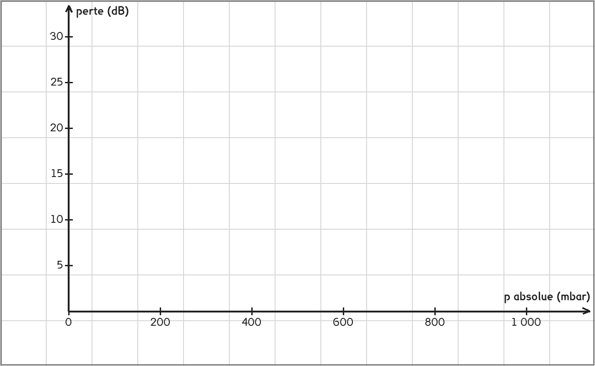

1re ou Tle Bac Pro · toutes spécialités · TP commun CT-16
Le son peut-il se propager dans le vide ?
3 figures
Sujet. Dans les films, les vaisseaux explosent dans l’espace avec un grand fracas. Entre les planètes, pourtant, il n’y a presque pas de matière : pas d’air, presque rien.

Problématique : le son peut-il se propager dans le vide ?
Document. Au sol, la pression atmosphérique vaut environ 1 000 mbar, soit 1 bar. Une pompe à vide retire l’air d’une enceinte. Son manomètre lit la pression relative, l’écart avec l’air de la salle : 0 bar à l’air libre, −1 bar pour un vide parfait. La pression absolue, celle de l’air qui reste, vaut : 1 000 mbar + la lecture en millibars.
a) Compléter avec le document. 1 bar = 1 000 mbar.
| Le manomètre lit | 0 bar | −0,4 bar | −0,9 bar | −1,0 bar |
|---|---|---|---|---|
| La lecture en millibars | 0 | −400 | ……… | ……… |
| Pression absolue : l’air qui reste (mbar) | 1 000 | ……… | ……… | ……… |
| La part de l’air qui reste | tout | ……… % | ……… % | ……… |
Le labo a une seule enceinte. Le professeur conduit la pompe et les vannes, et les groupes y passent à tour de rôle : ceux du protocole A, puis ceux du protocole B. Les deux écoutent un buzzer qui sonne dans l’enceinte, au sonomètre placé à 30 cm, pendant que l’air rentre peu à peu.

Protocole A · le buzzer suspendu. Le buzzer pend à un élastique accroché en haut de la cloche. Il ne touche ni les parois ni le fond.
Protocole B · le buzzer posé. Le buzzer est posé au fond de l’enceinte, comme un téléphone posé sur une table.
b) Compléter le tableau pour comparer les deux protocoles, puis choisir le vôtre.
| Protocole A | Protocole B | |
|---|---|---|
| Le buzzer touche un solide | oui · non | oui · non |
| Pour sortir de l’enceinte, le son passe par | l’air · le support · les deux | l’air · le support · les deux |
| Une raison de le choisir | …………………………… | …………………………… |
Je prends le protocole ……… parce que …………………………………………………………………… Le professeur peut vous imposer celui qui reste disponible.
c) Avant de mesurer, faire une hypothèse.
Si le son a besoin d’air, que devient son niveau quand on retire l’air ?
Le niveau mesuré : monte · ne change pas · baisse.
Quand il ne reste presque plus d’air, dans votre protocole, on entendra : encore le buzzer · presque rien, parce que ……………………………………………………………………………………
Avant de commencer
Seul le professeur touche la pompe, ses vannes et la cloche : une enceinte vide peut imploser, et la pompe chauffe.
Rien ne se pose sur l’enceinte ni contre elle, et aucun objet personnel n’y entre, surtout pas un téléphone.
Pendant le passage de l’autre groupe, le silence : le sonomètre entend tout.
En attendant votre passage : la question d, puis la ligne des pressions absolues du tableau e.
d) Schématiser votre montage, puis tracer en couleur tous les chemins
que le son peut prendre, du buzzer jusqu’au sonomètre.
Le schéma se dessine sur la feuille du TP.
e) Relever le niveau à chaque palier.
Calculer la pression absolue et la perte.
| Manomètre (bar) | −1,0 | −0,95 | −0,9 | −0,8 | −0,6 | −0,4 | −0,2 | 0 |
|---|---|---|---|---|---|---|---|---|
| p absolue (mbar) | < 20 | 1 000 | ||||||
| Niveau (dB) | ||||||||
| Perte (dB) | 0 |
La perte est ce que le niveau a perdu depuis l’air libre, à 0 bar. Bruit de fond de la salle, buzzer coupé : ……… dB.
f) Tracer la perte en fonction de la pression absolue.

g) Votre hypothèse de la question c est-elle confirmée ?
Au plus bas de la pression, le niveau est-il tombé au bruit de fond ?
Sinon, par où le son sort-il encore ?
h) Placer en couleur, sur votre graphe, les points d’un groupe de l’autre protocole.
Les deux courbes se ressemblent-elles ? Expliquer l’écart avec votre schéma d.
i) Répondre à la problématique en deux phrases, avec les mots « milieu matériel ».
Ce que ce TP a établi, et qui vaut pour tous les sons :
À RETENIR
Le son est une vibration de la matière, transmise de proche en proche : il lui faut un milieu matériel, gaz, liquide ou solide. Dans le vide, il ne se propage pas.
Moins il reste d’air, moins le son passe : la perte reste faible tant que la pression dépasse quelques centaines de millibars, puis elle grandit vite.
Le son passe aussi par les solides : un buzzer posé s’entend encore quand l’air est parti.
La pression atmosphérique vaut environ 1 000 mbar, soit 1 bar. Avec un manomètre relatif : pression absolue = 1 000 mbar + lecture.
Le son va à environ 340 m/s dans l’air, 1 500 m/s dans l’eau et 5 000 m/s dans l’acier. Au bout d’une rambarde en acier de 51 m, un élève frappe une fois avec une pièce ; à l’autre bout, on entend deux coups.
Par l’acier : 51 ÷ 5 000 = ……… s. Par l’air : 51 ÷ 340 = ……… s. Lequel arrive en premier ?
TP commun de physique-chimie, toutes spécialités. Le travail se fait sur la feuille du TP : cette page en est la version à l'écran, sans les lignes à remplir. Rien n'est enregistré.